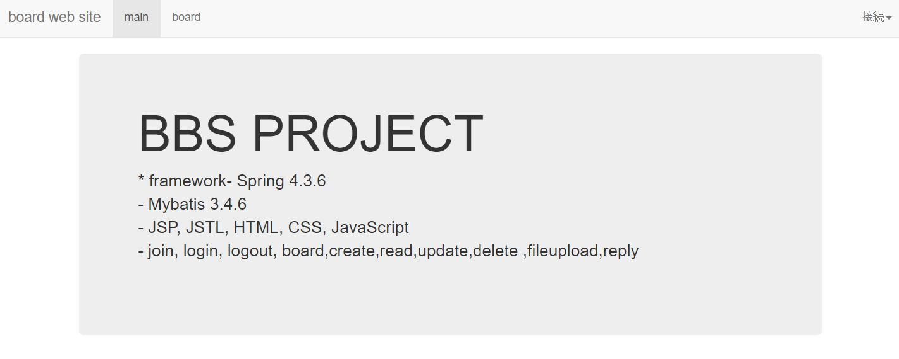

-->
Value
初めまして。ジョンビョンウクと申します。
私の出身は韓国のプサンです。
私の強みはコミュニケーション能力と適応力です。
こういう長所を十分に生かして働きたいです。
どうぞよろしくお願いいたします。
project

タイトル :返信掲示板システム
期間 :2020.07~2020.08
使用技術 : Java,Spring,JavaScript,Oracle,Bootstrap
機能 : CRUD
github
Experience
KITA-SES(韓国貿易協会 -Soft Engineer Society)
Startup Hub
2020.04~2020.12
日本のIT企業で働くためにSCIT教育課程に入りました。 Java/Spring、JavaScript、OracleDB、HTML/CSS、Jqueryを使用します。
韓國製鋼株式会社 QMチーム
2019.03~2019.12
製鋼会社の品質チームで働きました。 製品の化学成分検査、作業工程、品質検査を主な業務としていました。
語学研修 Kaplan New York
2017.04~2018.02
アメリカ語学研修を通して英語と多様な文化の人々とのコミュニケーションを学びました。
東義大学校経営学科
2011.03~2017.08
経営学を専攻しました。 プロジェクト経営、統計学、知識経営、経営科学などを中心に勉強しました。
Skills & Tools
Frontend
-
jQuery
-
JavaScript
-
HTML/CSS
Backend
-
Java/Spring
Language
- English (TOEIC 800点)
- Japanese (JPT 525点)
- Korean (Native)
Interests
- ウェイトトレーニング
- 歴史